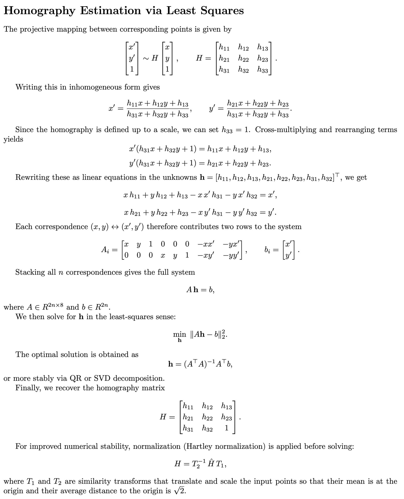
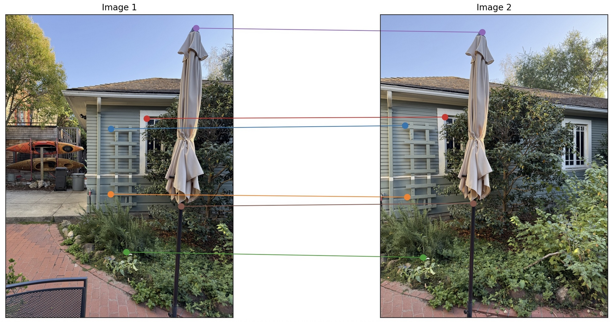
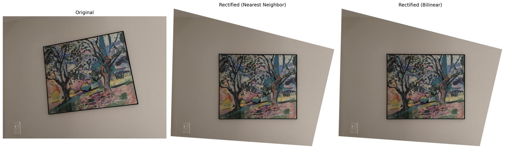
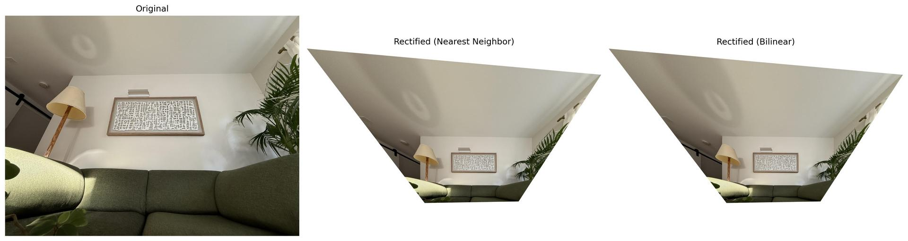
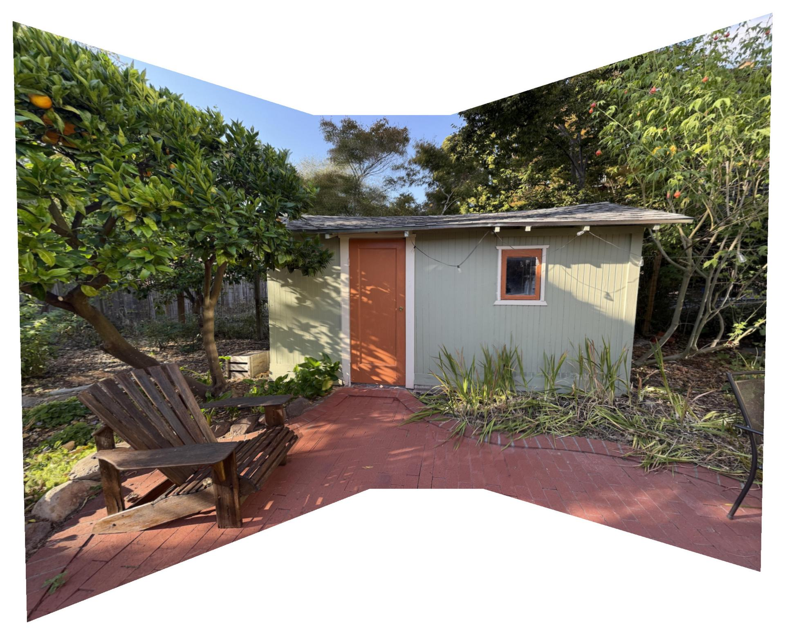
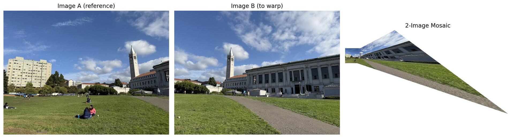

A1
Some Sample images used in this Lab are shown below.


Some Sample images used in this Lab are shown below.
In this part, we estimate the homography matrix H that maps points from one image to another. Using manually selected point correspondences, we build a linear system based on p' = H p and solve it in a least-squares sense to recover H. This transformation aligns the two images and serves as the foundation for image warping and mosaicing in later sections.



In this part of the project, I used the homography matrix from A.2 to actually warp and align images.
The homography describes how every point in one image maps to another view of the same plane. Using this mapping, I can take an image, “look at it” from a different viewpoint, or make a tilted object appear front-facing - a process called rectification.
How it works:
Instead of moving each source pixel to its new position (which would leave gaps or “holes”), I implemented inverse warping. That means for each pixel in the output image, I look up where it came from in the source image using the inverse of the homography. This ensures that every output pixel gets exactly one value, and the result looks complete and continuous.
To make sure the whole warped image fits into the frame, I first project the four corners of the original image through the homography and use their bounding box to define the output canvas size. This way, even if the image is rotated or stretched, no parts are cut off.
Finally, since the mapped source coordinates are usually not integer pixel locations, I implemented two different interpolation methods to decide how to compute pixel values from nearby samples.
Interpolation methods:
Nearest Neighbor Interpolation simply rounds each mapped coordinate to the closest pixel in the original image. It’s very fast and easy to compute, but it produces visible “steps” and jagged edges, especially for diagonal lines or when the image is scaled down.
Bilinear Interpolation uses the four surrounding pixels and takes a weighted average based on how close the mapped coordinate is to each one. This results in smoother transitions and fewer artifacts, especially for natural images or text, but requires more computation.
In my code (warpImageNearestNeighbor and warpImageBilinear), both methods are implemented from scratch - no external interpolation functions are used. Each method also handles both grayscale and RGB images and uses a white background for pixels that fall outside the valid image area.
Testing:
To test my implementation, I performed image rectification: I took a photo of a rectangular object (like a poster or a painting), clicked its four corners, and defined a perfectly rectangular target shape. Using the computed homography, I warped the original image so that the object appeared front-facing and undistorted.
Both interpolation methods produced correct results, but the differences in quality were clear:
• Nearest neighbor was faster but produced rougher edges and visible aliasing.
• Bilinear interpolation was slower but gave much cleaner and more natural-looking results.




Discussion:
Speed vs. quality:
Nearest neighbor is computationally cheaper, so it’s useful for quick previews or binary images (like masks). Bilinear interpolation takes slightly longer but gives a far better visual result for photographic images.
Handling image boundaries:
I handled pixels that map outside the source image by filling them with white. In practice, one could also use an alpha mask to keep track of valid pixels and blend multiple warped images later for the mosaics.
Numerical considerations:
Predicting the output canvas in advance avoids clipping and makes sure the full warped image is visible. Using inverse warping prevents missing pixels, which would otherwise occur if we tried to forward-map each source pixel.
Overall, this task demonstrates how the homography can be used to transform entire images, and how the choice of interpolation affects both visual quality and computational performance. The rectification examples confirm that the pipeline, from selecting points to computing H and warping the image, works robustly for different viewpoints.
To combine several overlapping images into one seamless panorama, I implemented a complete mosaicing pipeline. The goal was to align multiple pictures so that their overlapping regions match and then blend them together smoothly without visible boundaries.
Step 1: Collecting correspondences
For each pair of consecutive images, I manually selected corresponding points. Distinct features that appear in both pictures, such as corners or texture details. To make this process easier and more reliable, the selected points were numbered on the first image and displayed while selecting matches on the second.
Step 2: Aligning the images
From these point pairs, transformation matrices (homographies) were computed that describe how one image can be projected onto another. Instead of warping one image at a time and accumulating distortions, all images were transformed into a common coordinate system defined by a central “anchor” image. This creates a consistent geometric frame where all images fit together naturally.
Step 3: Creating the mosaic canvas
Before warping, I determined the overall area that all images would cover once projected. A white background of that size was created so that every image could be placed within it. Each picture was then warped once into this shared canvas.
Step 4: Blending the overlaps
To avoid sharp transitions where the images overlap, I used alpha blending.
Each image has an internal weighting mask (alpha channel) that gives full weight in the middle and gradually decreases toward the edges. When two or more images overlap, their pixel values are averaged according to these weights. This method produces smooth, soft transitions instead of visible borders, while keeping the outer edges of the mosaic crisp and white.
Step 5: Results
The resulting panoramas show three successful mosaics with their original input images. Weighted averaging effectively removed the strong edge artifacts that occur when one image simply overwrites another.
Compared to more complex techniques such as Laplacian pyramids, simple alpha blending already produced high-quality results with clean transitions and minimal computation. However, advanaced method would result in better blending and transitions.



